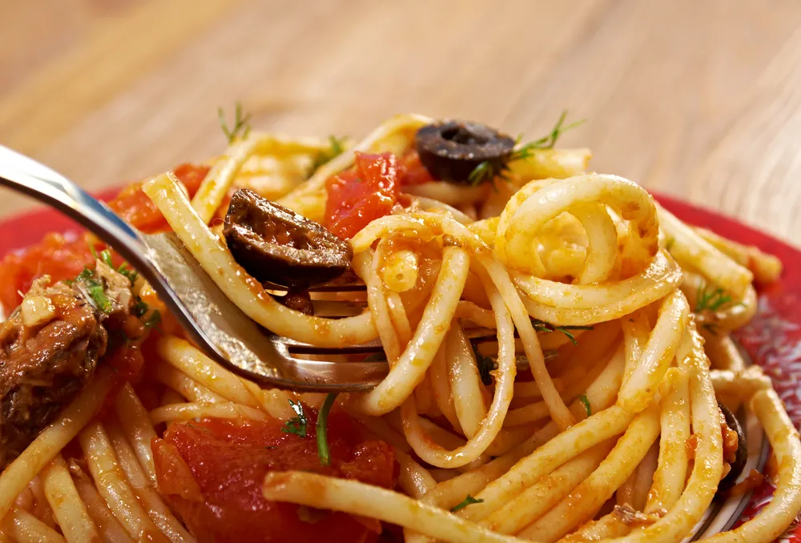

Spaghetti Alla Puttanesca

Description
This spaghetti dish from Italy appeared in Part 4 of Jojo's
Bizarre Adventure when Josuke and Okuyasu visit Tonio's
restaurant in Morioh. Tonio prepares this dish for Okuyasu
with the help of Tonio's Stand, Pearl Jam.
Ingredients
- 1/4 cup extra-virgin olive oil
- 4 large garlic cloves, finely chopped
- 1 28.2-ounce can peeled tomatoes in puree with basil
- 1/2 cup Kalamata olives, halved, pitted
- 3 anchovy fillets, chopped
- 1 1/2 tablespoons drained capers
- 1 teaspoon dried oregano
- 1/2 teaspoon dried crushed red pepper
- 3/4 pound spaghetti
- 2 tablespoons chopped fresh Italian parsley
- Grated Parmesan cheese
Steps
- Heat oil in large pot over medium heat. Add garlic
and saute until fragrant, about 1 minute. Add tomatoes
with puree, olives, anchovies, capers, oregano, and
crushed red pepper. Simmer sauce over medium-low heat
until thickened, breaking up tomatoes with spoon, about
8 minutes. Season with salt and pepper.
- Meanwhile, cook pasta in large pot of boiling salted water
until tender but still firm to bite. Drain pasta; return to
same pot. Add sauce and parsley. Toss over low heat until
sauce coats pasta, about 3 minutes. Serve with cheese.